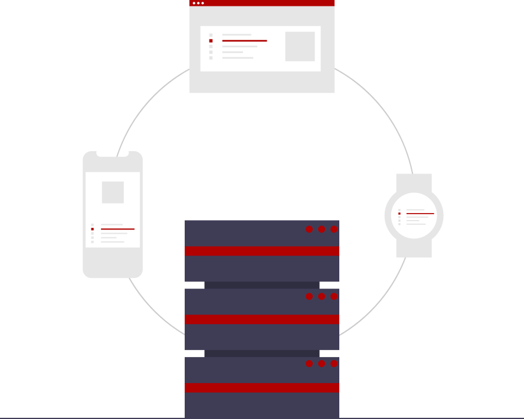
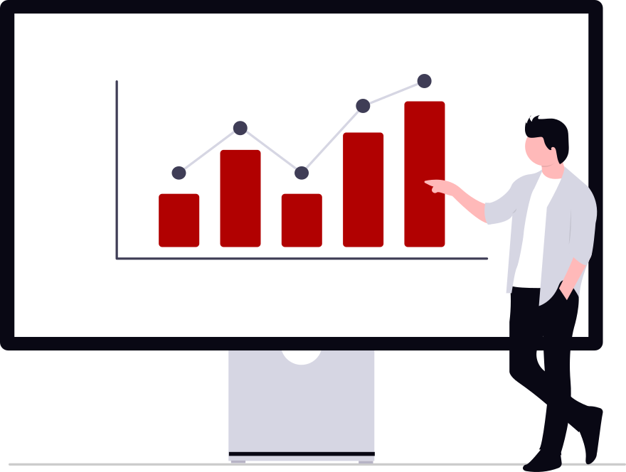
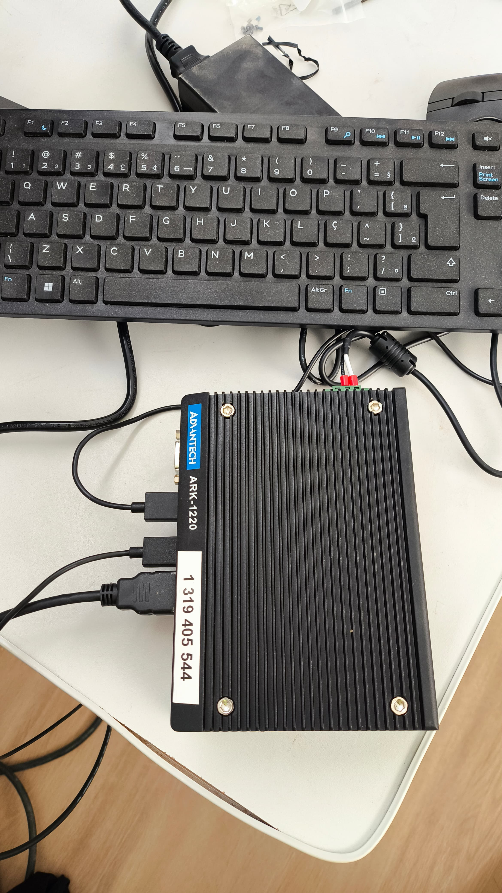
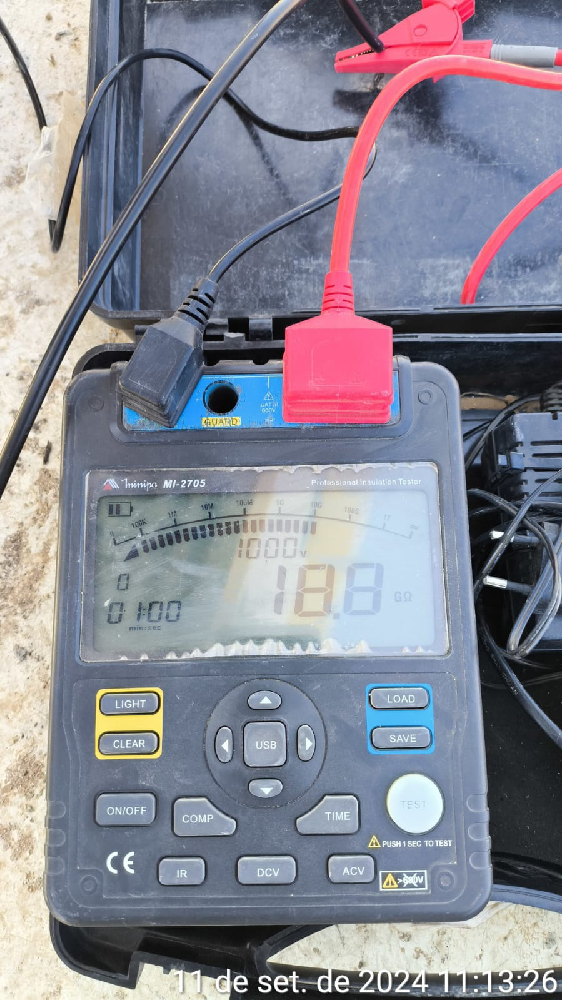
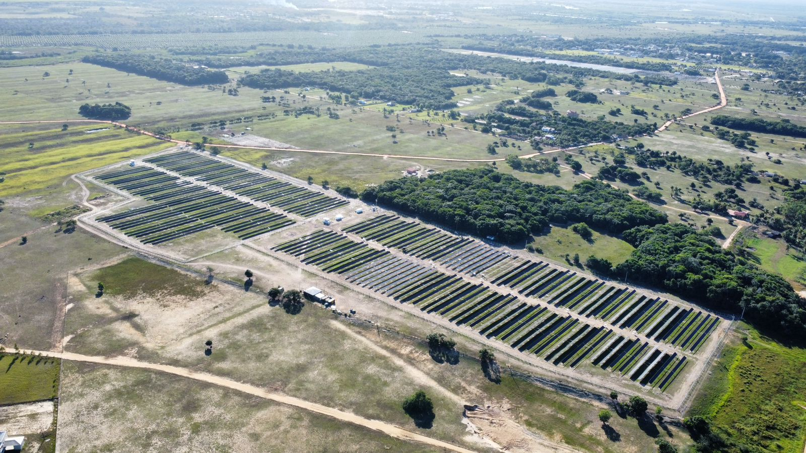
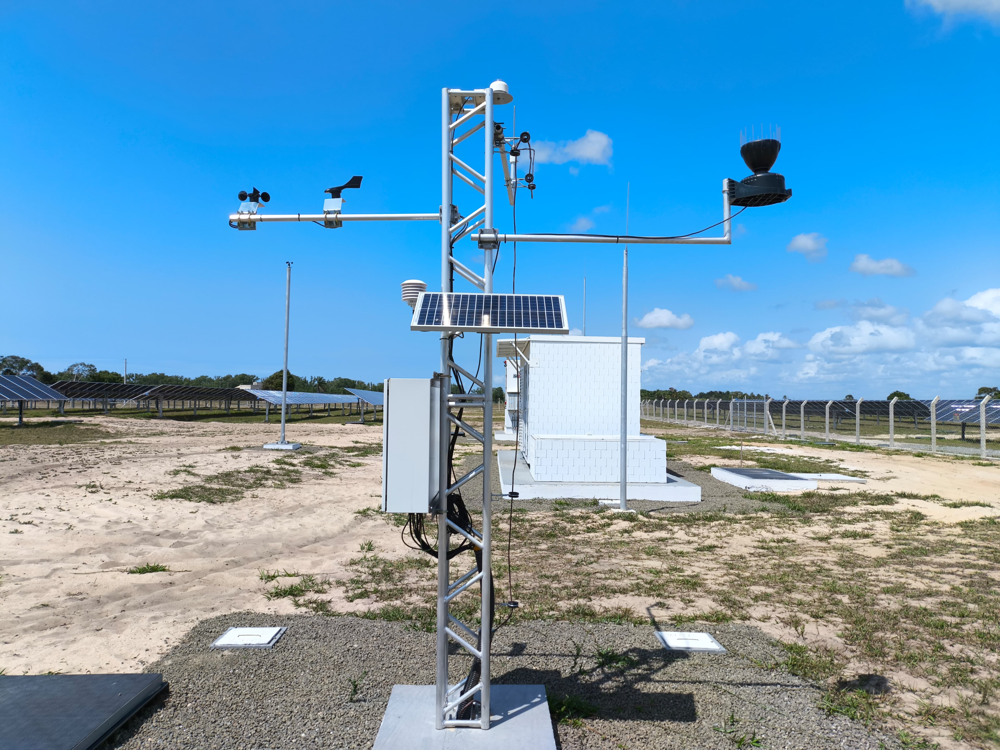
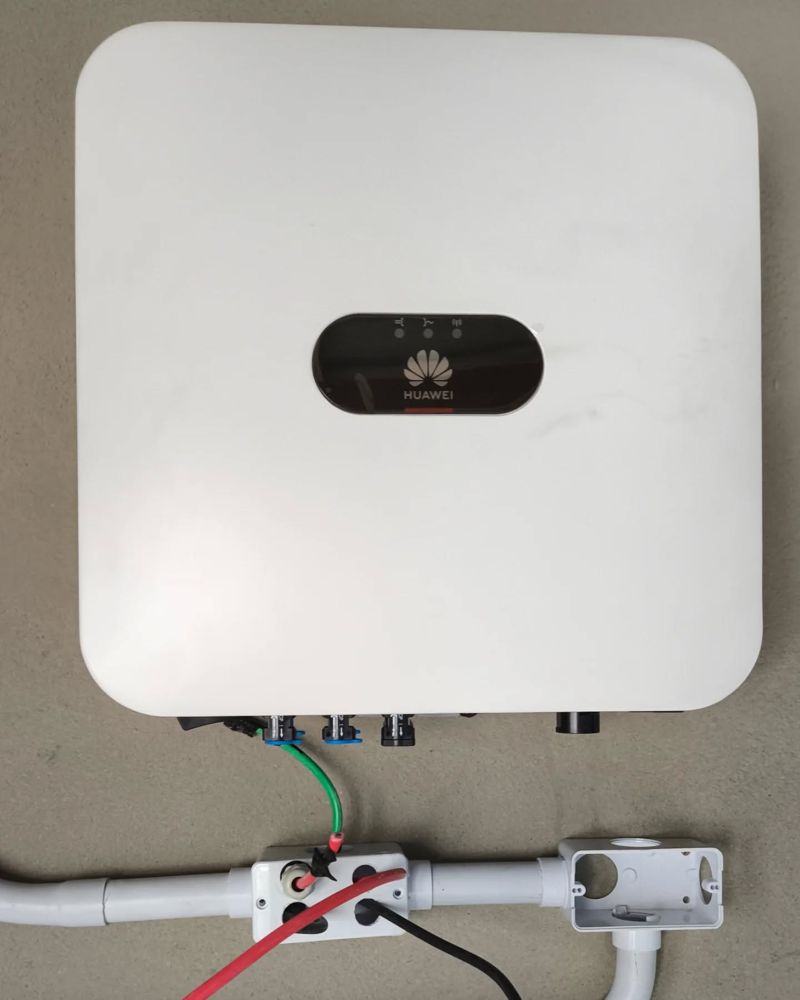
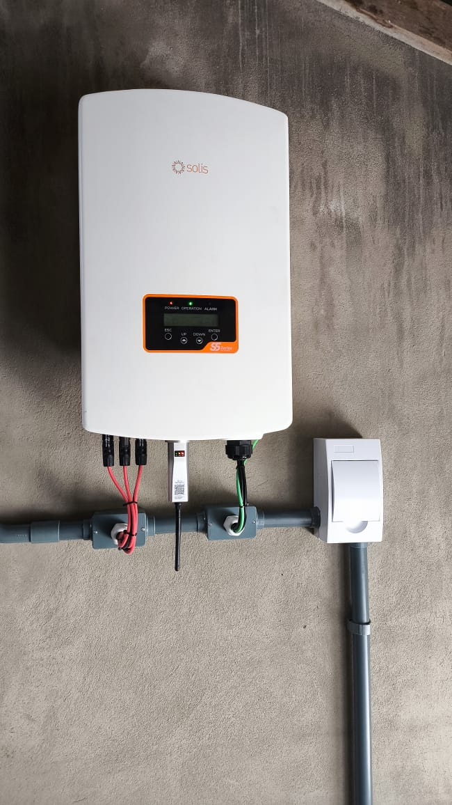

Industrial Automation, Electrical Systems and Technical Solutions
Software Engineering student with practical experience in industrial environments, electrical installations, electromechanical assembly, maintenance support and photovoltaic systems.

Electrical Assembly
Practical experience with electrical components, industrial support structures, wiring organization and electromechanical installation routines.
Industrial Automation
Career focus on industrial automation, technical diagrams interpretation, process support, system organization and technical efficiency.
Photovoltaic Systems
Field experience in photovoltaic environments, including solar module installation, plant support and solarimetric station assembly.
Industrial Automation and Electrical Systems in Practice
My background connects field experience, industrial routines and software knowledge to support smarter, safer and more efficient technical operations.

My goal is to connect field experience with digital solutions for industrial performance
I am building my professional path in Industrial Automation, combining practical electrical and industrial experience with software and technical problem-solving.
- Electrical panel assembly and electromechanical installation support.
- Interpretation of technical drawings, electrical schematics and industrial diagrams.
- Testing, inspection, adjustments and support in preventive and corrective maintenance.
- Installation of photovoltaic modules and infrastructure support in solar projects.
- Use of Python and technical tools to optimize workflows, support routines and organize information.
My experience includes work in industrial assembly, maintenance support, administrative and technical operations, photovoltaic systems and practical problem solving, while I continue developing my skills in automation and software engineering.
Areas of Expertise
Electrical Assembly
Assembly of electrical components, structures, conduits and support systems used in industrial environments.
Technical Diagram Interpretation
Reading and interpretation of schematics, technical drawings, blueprints and industrial documentation.
Maintenance Support
Support in preventive and corrective maintenance, inspection routines, system checks and equipment adjustments.
Photovoltaic Systems
Installation of photovoltaic modules, solar plant structure support and solarimetric station assembly activities.
Industrial Automation
Professional focus on industrial automation, process optimization, systems integration and technical efficiency.
Python for Technical Solutions
Use of Python to support automation routines, internal tools, organization, analysis and technical workflows.
Recent Works
Main technical experiences, industrial activities and automation-focused projects aligned with my professional background.
- All
- Industrial Automation
- Electrical Assembly
- Maintenance & Testing
- Photovoltaic Systems
- Technical Software

{kind=link}

{kind=link}


{kind=link}

{kind=link}

{kind=link}

{kind=link}
{kind=link}
Professional References
Companies, professionals and environments connected to my technical and industrial journey.
GitHub
Explore my repositories to see technical projects, automation studies and practical software solutions related to industrial and operational contexts.
Visit GitHubMore About Me
I am a Software Engineering student focused on Industrial Automation, with practical experience in electromechanical assembly, electrical installations, technical support, inspection routines, maintenance support and photovoltaic systems. My path combines field experience with software knowledge, aiming to contribute to industrial efficiency, reliability and continuous technical improvement.

Sidney Teodoro Araujo Junior
Industrial Automation | Electrical Systems | Software Engineering StudentContact
Feel free to get in touch to talk about Industrial Automation, Electrical Systems, Technical Projects or professional opportunities.